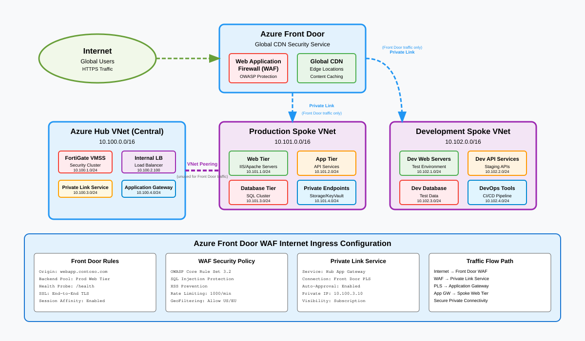

Internet ingress via Front Door¶
Overview¶
Global inbound traffic reaches Azure workloads through Azure Front Door with WAF protection, bypassing the hub NVA tier entirely via Private Link. This pattern provides low-latency global load balancing, DDoS absorption at the Microsoft edge, and origin cloaking so backend workloads are never directly exposed to the public internet.

Traffic flow¶
- Client sends HTTPS request to
app.newco.com. - DNS resolves to Azure Front Door anycast IP (Microsoft global edge).
- Front Door WAF evaluates the request against managed and custom rule sets (OWASP CRS, bot protection, geo-filtering, rate limiting).
- Front Door selects the optimal origin based on latency probes and health checks.
- Private Link connection from Front Door to the origin (internal load balancer or App Service) keeps traffic on the Microsoft backbone. No public IP needed on the origin.
- Origin load balancer distributes to backend compute (VMSS, AKS, App Service).
- Response returns through Front Door, which applies caching and compression rules.
The hub NVA is intentionally bypassed for Front Door ingress. The NVA is designed for outbound and east-west inspection. Routing inbound web traffic through it would add latency and create a scaling bottleneck. WAF policy at Front Door provides the equivalent L7 protection for inbound flows.
Key components¶
| Component | Role | Azure resource |
|---|---|---|
| Azure Front Door Premium | Global L7 load balancing, SSL offload, caching | Microsoft.Cdn/profiles (Premium tier) |
| WAF policy | OWASP CRS 3.2, bot protection, custom rules | Microsoft.Network/frontDoorWebApplicationFirewallPolicies |
| Private Link service | Origin cloaking, backbone-only connectivity | Microsoft.Network/privateLinkServices |
| Private endpoint | Front Door connection into spoke VNet | Microsoft.Network/privateEndpoints |
| Internal load balancer | Backend distribution in spoke | Microsoft.Network/loadBalancers (Standard, internal) |
| App Service (alternative) | PaaS origin with built-in Private Link support | Microsoft.Web/sites |
| Azure DNS | CNAME to Front Door endpoint, plus validation TXT | Microsoft.Network/dnsZones |
Architecture decisions¶
Why Private Link instead of public origin¶
| Public origin | Private Link origin | |
|---|---|---|
| Origin IP exposure | Public IP required, discoverable | No public IP, fully cloaked |
| Traffic path | Front Door -> internet -> origin PIP | Front Door -> Microsoft backbone -> PE |
| NSG requirements | Must allow Front Door service tag | Only private traffic, deny all public |
| DDoS surface | Origin PIP is attackable | No public surface to attack |
Private Link is the recommended approach for all production workloads.
WAF policy design¶
Apply a base WAF policy at the Front Door profile level, then override per-route where applications need specific exclusions. Use prevention mode for production and detection mode during onboarding to tune false positives.
Routing¶
No spoke UDR changes are needed for Front Door ingress. The Private Link connection terminates at a private endpoint in the spoke VNet, and return traffic follows the private endpoint's effective routes. The hub NVA default route (0.0.0.0/0) does not apply because the traffic never hits the spoke's route table as internet-sourced.
| Scope | Prefix | Next hop | Notes |
|---|---|---|---|
| Spoke UDR | (no entry needed) | - | Private Link traffic is backbone-routed |
| NSG on origin subnet | Allow from PE subnet | ILB/app port | Only traffic source is the private endpoint |
Implementation notes¶
Custom domain and TLS¶
Front Door manages certificate lifecycle for custom domains via Azure-managed certificates or customer Key Vault certificates. Use CNAME flattening (or afdverify prefix) to validate domain ownership before cutover.
Health probes¶
Configure health probes on Front Door to hit a dedicated /health endpoint on the origin. Set probe interval to 30 seconds with a 3-probe failure threshold. This avoids probe traffic overwhelming thin backends.
Caching strategy¶
Enable caching for static assets (images, CSS, JS) with query string stripping. Disable caching for API routes and authenticated content. Use cache purge API integration in CI/CD pipelines for deployments.
Bicep snippet (Front Door + Private Link origin)¶
param location string = resourceGroup().location
resource afd 'Microsoft.Cdn/profiles@2024-02-01' = {
name: 'newco-frontdoor'
location: 'global'
sku: { name: 'Premium_AzureFrontDoor' }
}
resource endpoint 'Microsoft.Cdn/profiles/afdEndpoints@2024-02-01' = {
parent: afd
name: 'newco-web'
location: 'global'
properties: { enabledState: 'Enabled' }
}
resource originGroup 'Microsoft.Cdn/profiles/originGroups@2024-02-01' = {
parent: afd
name: 'newco-origins'
properties: {
loadBalancingSettings: {
sampleSize: 4
successfulSamplesRequired: 3
}
healthProbeSettings: {
probePath: '/health'
probeProtocol: 'Https'
probeIntervalInSeconds: 30
}
}
}
Security considerations¶
- Zero Trust alignment (NIST SP 800-207): Front Door WAF acts as the policy enforcement point for all inbound web traffic. Private Link ensures that even if WAF is misconfigured, origins have no public attack surface.
- Origin cloaking: Remove or never create public IPs on origin resources. NSGs on the origin subnet should deny all inbound except from the private endpoint subnet.
- Bot protection: Enable the bot manager rule set on Front Door Premium to block known-bad bots and challenge suspicious automated traffic.
- Logging: Enable Front Door diagnostic logs (access logs, WAF logs, health probe logs) to Log Analytics. Correlate with origin application logs using
X-Azure-Refheader. - Rate limiting: Apply rate limit rules at Front Door to absorb volumetric L7 attacks before they reach origins.
Related patterns¶
- Internet egress - outbound path for the same spoke workloads
- Branch to Azure - how internal users reach the same backends via ExpressRoute
- Region-to-region transit - failover routing when the primary region origin is unhealthy